Completed on: 2025-04-28
Part I: Machining the Required Parts
 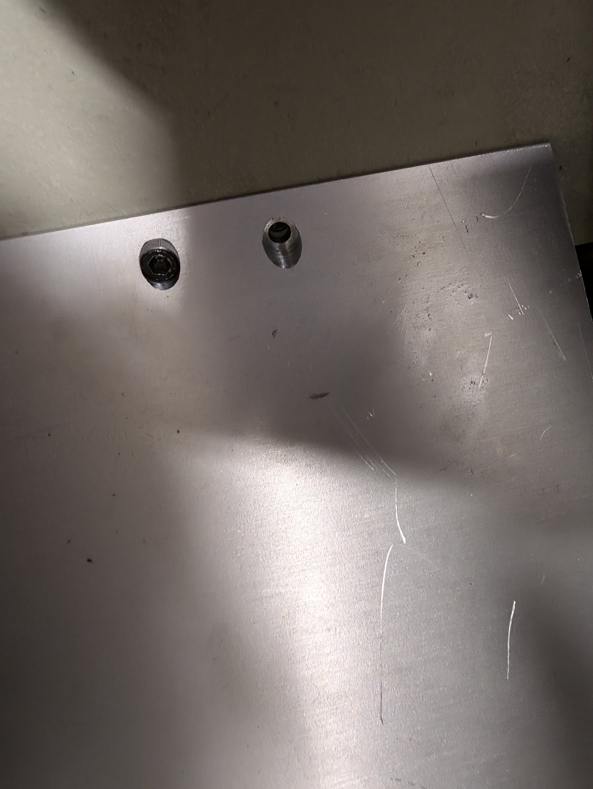
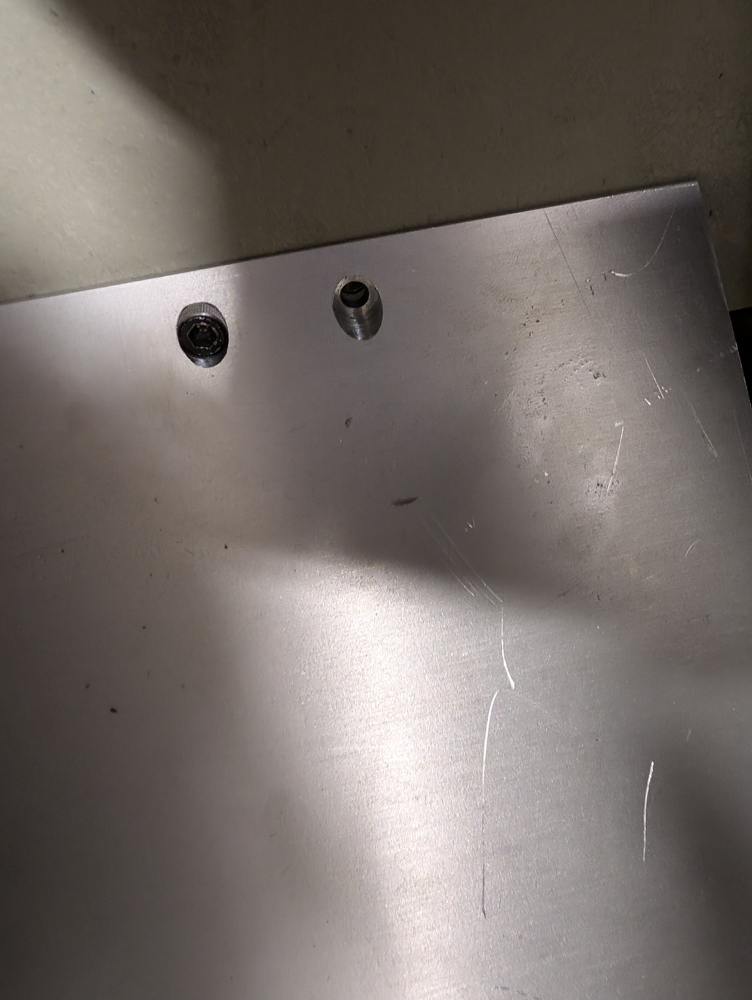
First we need a flat base to connect the motor too. So I took some careful measurements and machined an aluminum assembly at the precise angle to screw into the magnet (which thankfully had some holes depressed inside its container). I think this part was rather fun and a little nerve racking trying to create the counterbores at a 45 degree angle. I learned a few things from my previous endeavors and measured not once, not twice, but thrice before I cut. I think it turned out pretty well if I may say so.


Next we need to mount the motor to the aluminum assembly to allow us to mount a rod to the system. I think its fun to look back at my exquisite engineering drawings that allowed such precise craftsmanship to work. A quick glance to the left and the right of the engineering drawing shows excellent agreement with what we drew up. Now all thats left to do is attach the assembly to the magnet and figure out a way to connect the shaft of the motor to the rod holding the carrier PCB.
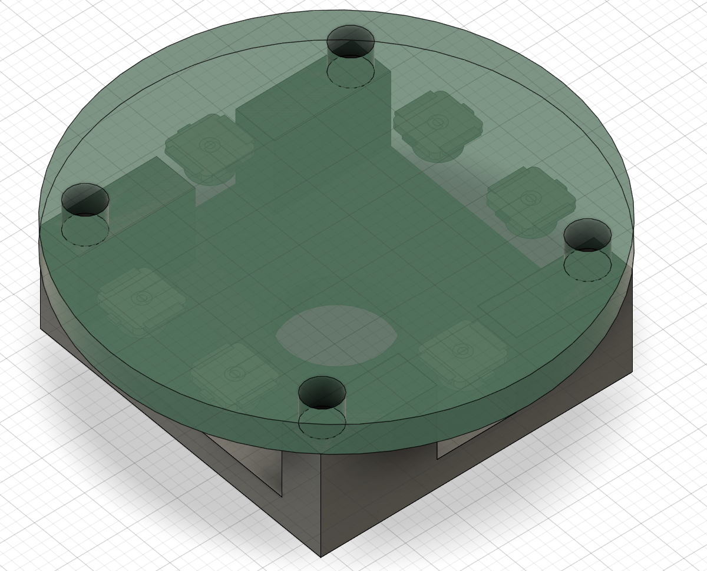 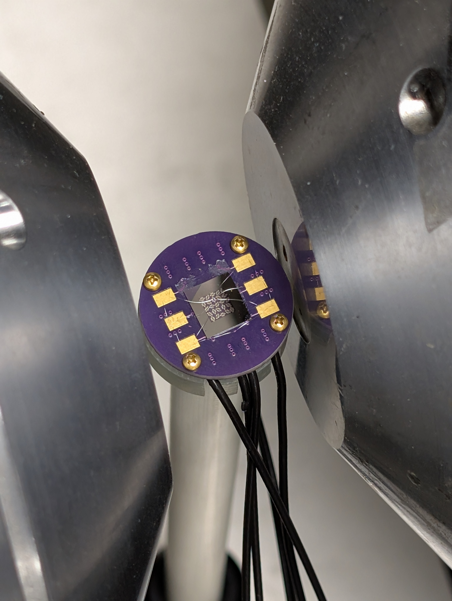 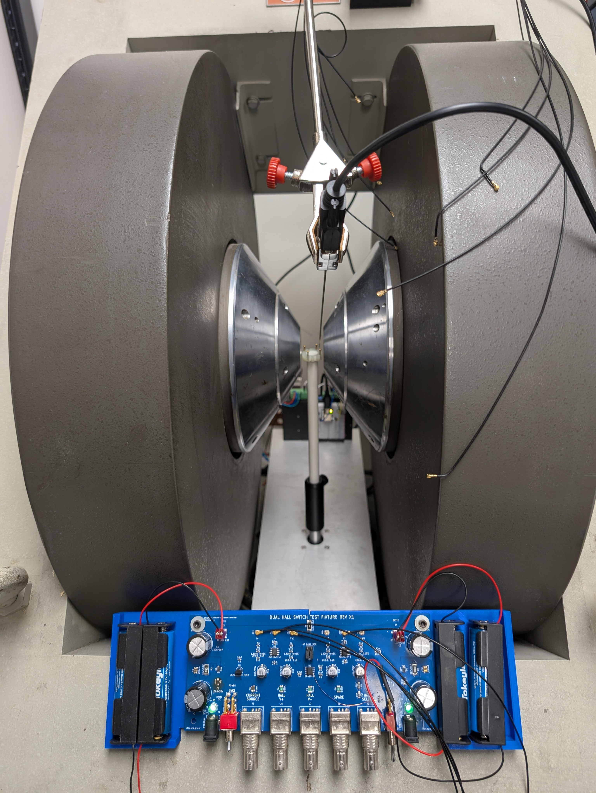We must have some PCB to mount our sample too (right image) but how do we mount our PCB to the rod which mounts to the shaft of the motor?. Our sample has to go into the center of the sample so we cant place a throughhole there so I opted for the solution in the CAD model. Note that it's quite different than how it was actually machined, since we realized it would be much easier to just make notches for the cables to escape. To allow for variable height, I opted to use a thorlabs post holder to allow one to secure a garolite rod (quite rigid and machinable) in between the post holder and set screw to adjust the height. This is shown in the final image above.


 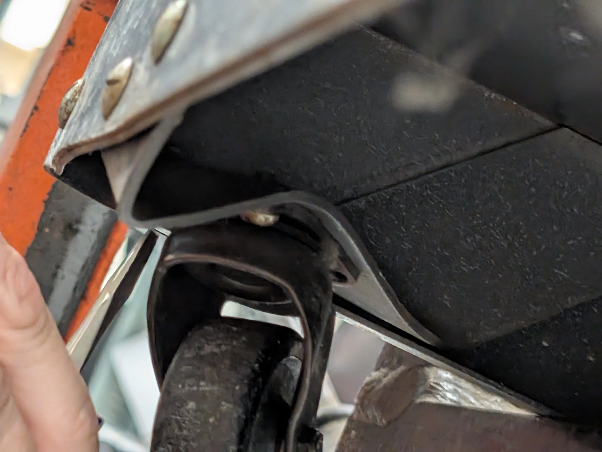
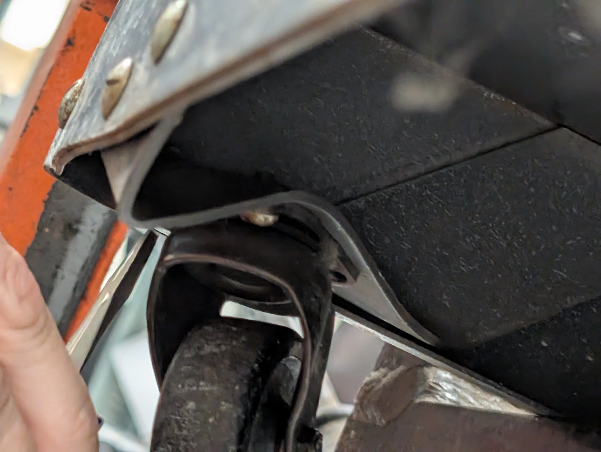


The final machining related task is fixing the housing of the power supply since when it was shipped to us (from MIT) one of the wheels broke quite badly. The wheel was bent so badly it could not be replaced and the connection points were quite weak among the other wheels I opted for a more robust solution of buying a dolly to support the several 100lb power supply and machined some brackets to screw the housing directly into the dolly allowing us to wheel the power supply around with peace of mind. Now I would be more than happy to include tons more photos of me actually fixing the power supply but man this is getting way longer than I envisioned. Just know we had to replace broken fuses and power BJT's several times during testing. I will not be posting the schematic of the power supply as I did not design it and all credit goes to David Bono (are you sensing a pattern yet?).
Part II: The Carrier PCB


Above we have the Schematic (no idea why some stuff is crossed out), Layout, and 3d model of the Carrier PCB. Please note this are the files from the second version of the PCB, or at least the second batch I ordered. I don't believe I changed much between versions except the order paramters as I'm sure you'll see soon.
 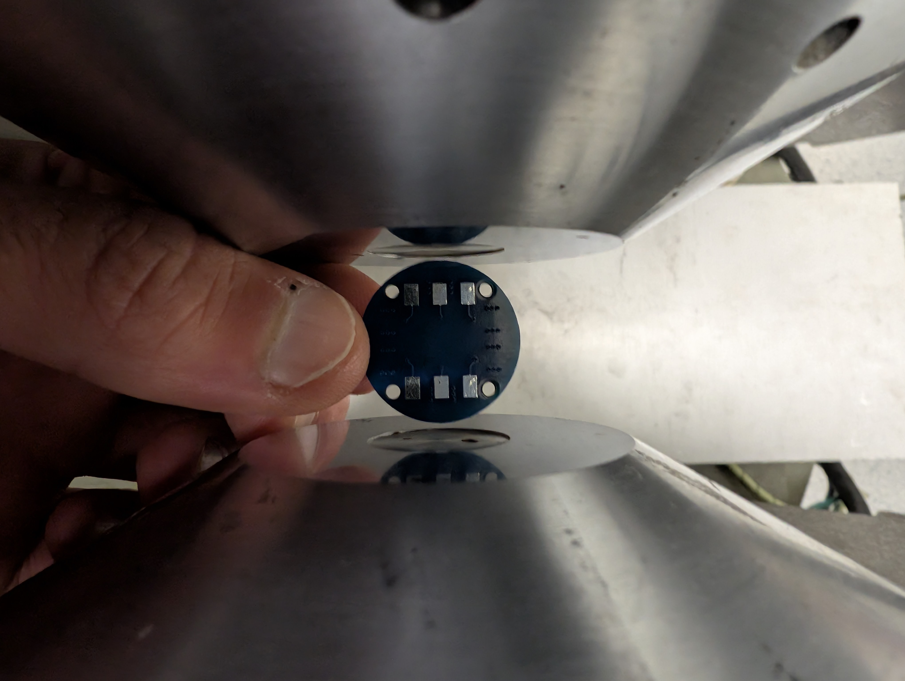
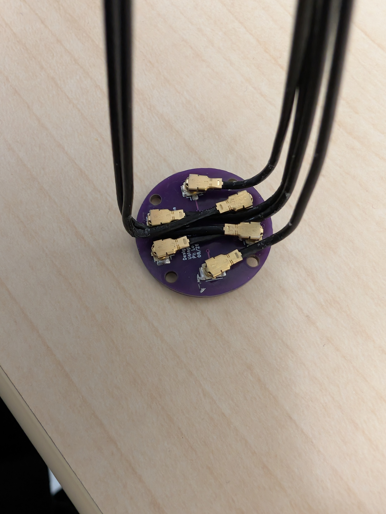
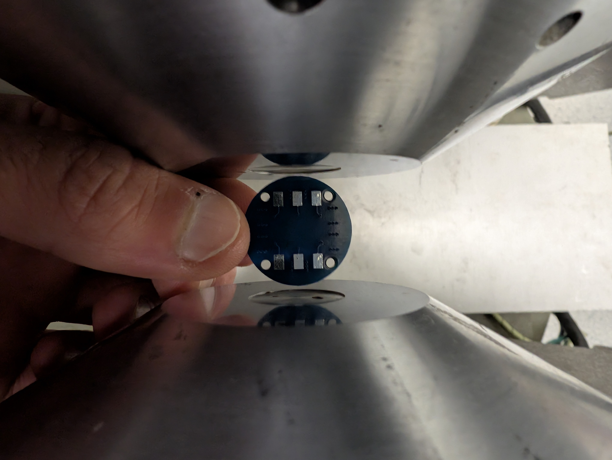
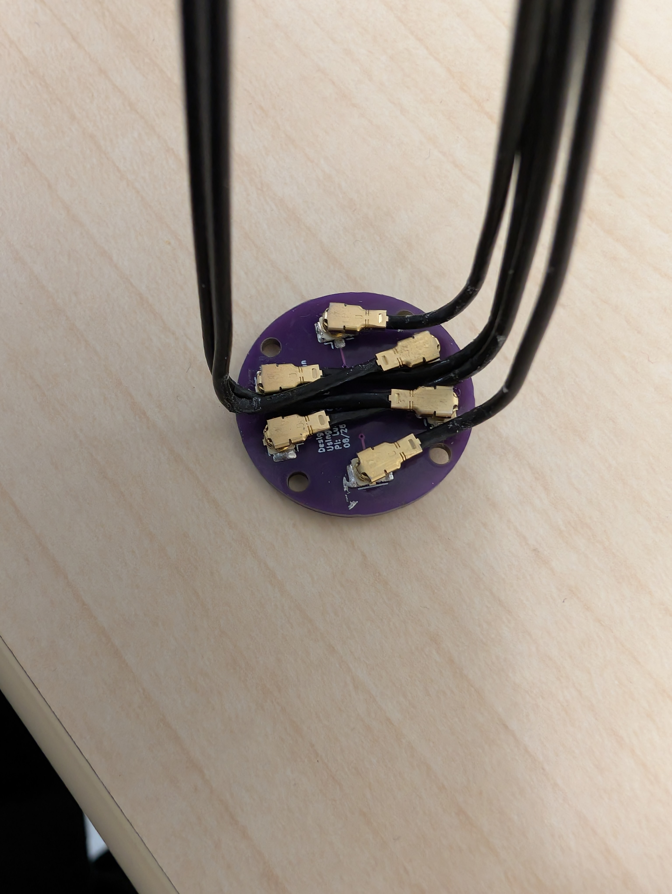
I hope its quite clear why I had to reorder some new PCBs from the first image. If not feel free to check out my MOKE PCB page -- I seem to never learn. However, just like the MOKE case all was not lost as I could test to see how the PCB fit between the poles and you can see a small gap on either side meaning I at least got better at measuring. In case you didn't figure it out yet, I forgot to order ENIG plating (which is required if you want to wirebond to the PCB). The last image shows the v2 PCB with the wiring as they stay and slide inbetween the slots carved out of the adapter plate mentioned in the first part. Unfortunately, this system means that it is quite tedious to change samples and I am looking to create an adapter PCB that can slot in with pogo legs (This was vetoed by David due to extra noise considerations but I think experimentation is worth it).
Part III: The Dual Hall Switch Amplifier Board


Here we can see the Schematic, Layout, and 3d model of the amplifier board. Rather than dive too deeply into the specifics of the board I'd rather talk about the design paramaters of the board. As we saw on the Carrier PCB, we have 6 coax connections and this board is designed to intelligently allow the researcher to switch between different measuring orientions via a switchbox of sorts. Imagine we wish to measure both transverse and longitidinal Hall voltages in our sample. If we had no switch, and a simple board that would require use to wirebond our sample, measure an orientation and then take our sample out and rewirebond the other orientation to capture both geometries. What if instead we wirebond a single time, share the V- pad for both the orientations and can switch what we measure via the circuit board. This seemed rather complex, but useful to have nevertheless, so you guessed it! I went and asked David to see if he could help me design a board capable of this stuff and that's how we eneded up with such a nice and robust board. Furthermore, Brian helped a ton as well with the layout and building the pours. So in sum (and if you look closely on the schematic) we can see that all the traces are run differentially to help minimize noise and we have two dual op amps totalling 4 amplifiers for V1+, V2+, V-, and an optional pass through. What is especially nice about this passthrough is via a jumper cable select we can choose to have a raw passthrough or have it be amplified as well allowing us to potentially test our amplifier claims. Furthermore, to help reduce noise, we power the amplifiers via batteries, but also allow for optional wall power (plus filtering) to power the circuit as well as recharge the batteries. Thus making the entire system self contained, and lastly to help with the spirit of automation, we can switch between V1+ and V2+ via a physical switch, or a remote analog signal depending on the configuration. Thus we can automate a measurement suite to test multiple geometries without any physical intervention. Again a huge thanks to David and Brian for all their support on this project as well as troubleshooting the issues we found.
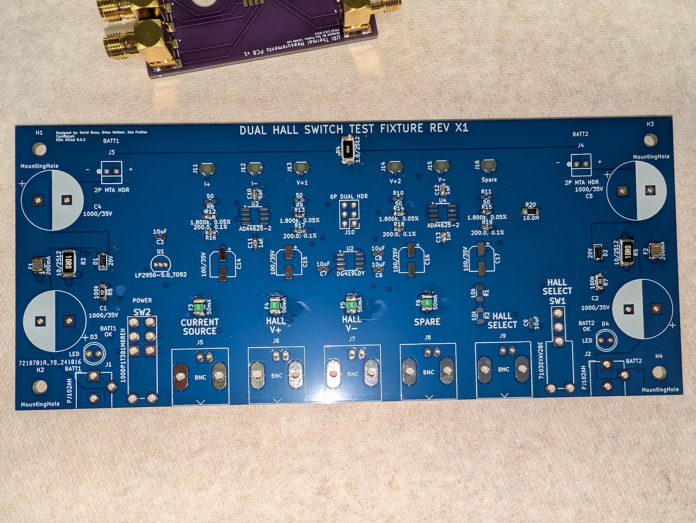

On the left we have the blank board in all its glory with a few parts already soldered on. In the middle, we get an excellent reminder to always check your footprints (I did not have the same footprint library as David so I just assumed it was correct). The part numbers did not match up but a quick search found a suitable part and all was well. In order to test the board, I opted to use some unorthodox jumpers to bypass the switch and found the LED's able to turn on but the original design called for 3.7V across both power sources for a net 7.4V, which was inadequate to flip the switch for the Hall Selector (and run the amplifiers actually) thankfully, this was easily remedied by wiring two batteries in series for each end (which you can see in the final product below). There were a few more miscellenous issues that required a jumper to fix as well as an incorrect wiring which was rememedied by soldering wires on the back of the board but not bad for a version 1 board! Perhaps what I am most pleased with is the fact that I troubleshot mostly bymyself and designed certain parts of the board unlike in previous collobrations. I also did the layout myself (which David later fixed) as well as the pours with the help of Brian. All in all a very instructional project that I think succeeded quite fabulously and if you have any doubts find a local student that took my class and used the instrumentation and ask away!

The board in all its glory as well as the custom 3d printed enclosure to securely mount the PCB to the magnet and give the batteries a place to rest. This took 2 revisions to get right, but everything fits quite snugly. Thank you to the Brown Design Workshop for making this possible! Note the board could not be printed from a singly piece sadly since it was wider than the print bed by quite a margin. Fun fact, note the holder for the probe that leads to the gaussmeter that was alluded too in the gaussmeter page (to be honest we are looking to replace it for a more robust solution like in ST-FMR but it works).
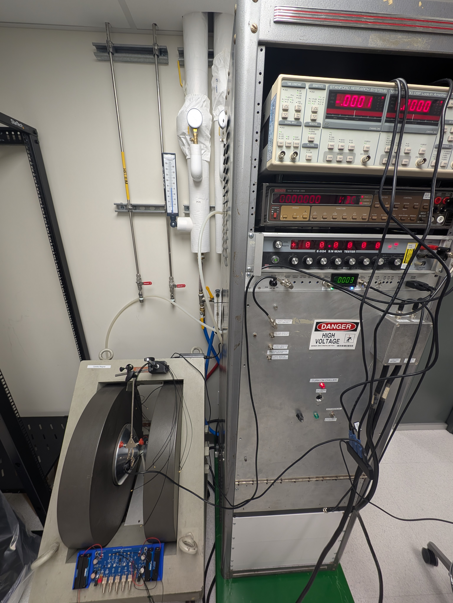A photo taken from my lab manual detailing AMR showing the complete setup with all necessary equipment. The basic setup is described below in the main text. NOTE INCLUDE VIDEO OF SETUP WORKING BELOW
This project holds a special place in my heart and like the ST-FMR system took MUCH longer to complete than I had originally anticipated. In fact, it was only fully operational (including code automation) the day BEFORE undergrad students taking my lab class had to use it -- whew. This project is really split into three parts: The build, The Carrier PCB, and The Amplifier PCB. As a result I apoligize in advance for the length of this page. Without further ado, let's understand what I was tasked with building. It was aptly to be called, the 'Transport Measurement Setup', but I will default to AMR for now since that is what I used it for first. Basically, we want to be able to connect to our sample (which will be wirebonded to a PCB that I will have to design) and we would like to have that rotate in the field of the given magnet which we already have. Seems simple enough, and since I never learn any better, I decided to throw in an extra challenge. Typically, when taking transport measurements that yield very small signals, we use a lock-in technique. I won't go into the specifics of why or how, but just know its important. So a quick look at our spec sheet of the SRS 830 tells us we should expect about 6nv/sqrt(Hz) of noise which is quite good. But after spending too much time around David up at MIT I wanted to build my own amplifier and with Davids help we would target an amplifier capable of 4nV/sqrt(Hz). So now my task is to create machine the necessary parts and connect a motor to a shaft where we mount our carrier PCB that holds our sample. Then this can rotate freely and this must connect to a secondary PCB where we can break out the connection to BNC connections to go to our instruments (as well as amplifying our signal). Now this must ALL be done within the constraints of the given magnet, which yields us with less than 1" between the poles that we have to mount a PCB too, a connection method, and 6 coax connections. Did I mention we have a less than 1 inch (and the pcb has to rotate so think a circle of diameter <1"). Luckily, we can use U.FL connecters to drastically reduce our footprint size and they are rather cheap and abundant, albeit a pain to solder the receptacles and the cables break easily. But alas, it will all be worth it. So with that in mind we can tackle desiging the AMR system and again relying on David to give us a power amplifer to power our ancient magnet. Thus we are now left with a harmony if instruments that work together to give us beautiful data. In the case of AMR, we can use the lock-in amplifier to generate our current signal and connect that to my custom amplifer board (Dual Hall Switch) which passed the current up to the Carrier PCB and the sample. The corresponding readout voltage is then passed through my differential amplifiers (each with a gain of ~50) to the differential amplifer of the lock-in allowing us to investigate really tiny signals. The magnetic field strength is programmed via a DMM that feeds through our analog feedback control via the gaussmeter I built and the corresponding readout is checked by a different DMM to pass to the computer to ensure we are at the correct field. Then, borrowing off of the Magnet Maker and ST-FMR work I have the same motor-driver code control setup enabled here which all connects to a single USB port via a USB hub that allows the entire system to be controlled (and automated) via some custom software I wrote. This allows students and researchers to take repeatable and reliable measurements at the press of a button. Of course, some setup is required like turning on the chiller for the magnet and power supply as well as wirebonding your sample, but it is as plug and play as I could make it and for that fact I am very proud of it.